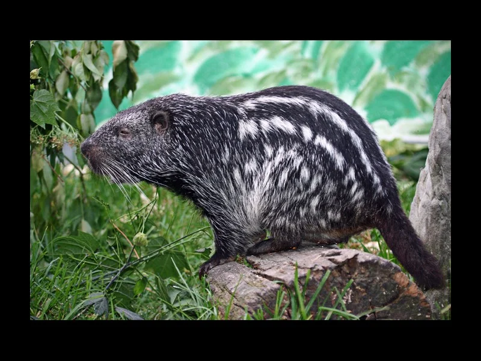

Zorro

Zorro adaptable que habita en diferentes ecosistemas.
Afectados registrados: 641
Ciervo de los pantanos
Ciervo de gran tamaño que vive en zonas húmedas.
Afectados registrados: 375
Jochi calucha
Roedor ágil y rápido, común en los bosques.
Afectados registrados: 122
Oso bandera
Mamífero insectívoro caracterizado por su gran hocico.
Afectados registrados: 94
Capiguara

Roedor más grande del mundo, habita en zonas cercanas al agua.
Afectados registrados: 90
Ocelote
Gato salvaje con pelaje manchado, ágil y nocturno.
Afectados registrados: 65
Anta
Mamífero grande, relacionado con los caballos y los rinocerontes.
Afectados registrados: 62
Taitetú
Jabalí pequeño y robusto que habita en zonas boscosas.
Afectados registrados: 58
Osito lavador
Mamífero conocido por sus habilidades para manipular objetos.
Afectados registrados: 36
Tigre

Gran felino de gran fuerza y agilidad, también conocido como jaguar.
Afectados registrados: 34
Tapití
Conejo silvestre de tamaño pequeño y pelaje suave.
Afectados registrados: 31
Tejón
Mamífero omnívoro de tamaño mediano, activo durante la noche.
Afectados registrados: 21
Puma

Gran felino conocido por su agilidad y capacidad de caza.
Afectados registrados: 8
Tatú
Armadillo conocido por su caparazón resistente.
Afectados registrados: 7
Melero

Mamífero especializado en alimentarse de insectos.
Afectados registrados: 5
Zorro patas amarillas
Zorro de tamaño pequeño con patas de color distintivo.
Afectados registrados: 5
Borochi

Mamífero solitario y en peligro de extinción.
Afectados registrados: 2
Urina

Ciervo que habita en áreas densamente forestadas.
Afectados registrados: 2
Manechi negro

Mono de gran tamaño, común en los bosques tropicales.
Afectados registrados: 1
Yaguarundi
Gato pequeño, de cuerpo alargado y color uniforme.
Afectados registrados: 1
Lobito de río

Mamífero acuático que habita en ríos y lagos de agua dulce.
Afectados registrados: 1
Tamandúa

Pequeño oso hormiguero, caracterizado por su largo hocico.
Afectados registrados: 1